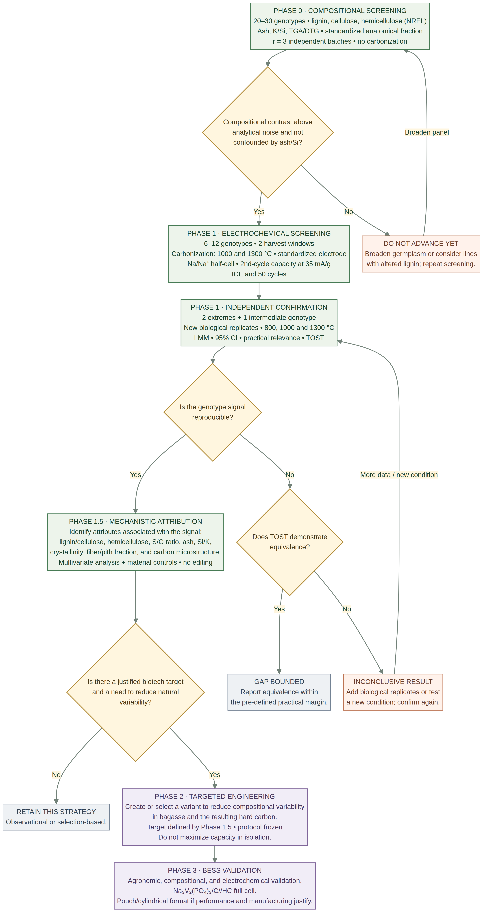

Carbon-Cane — exploratory independent research proposal
This proposal examines whether natural variation among sugarcane genotypes may leave a detectable signature in the hard carbon produced from bagasse when processing conditions are rigorously controlled.
The document does not present this relationship as established. Its purpose is to set out a testable hypothesis, make the main methodological challenges explicit, and invite critical assessment by specialists before the experimental protocol is finalised.
This is an independent initiative that is still under development and remains open to bibliographic, methodological, and conceptual corrections.
Methodological decisions governing this version
Document status. v1.0 is an exploratory independent research proposal for expert consultation. It is not a protocol to be specified before preregistration, preregistration, executed study, systematic review, or experimental result. Numerical parameters in later sections are planning hypotheses or decisions to be made with the executing laboratory unless explicitly identified as published data.
Hypothesis and inferential scope
The testable hypothesis is that natural differences among sugarcane genotypes may be associated with measurable differences in bagasse-derived hard carbon when precursor preparation, carbonization and electrochemical evaluation are controlled. The proposal does not assume that the lignin-to-cellulose ratio is the sole or necessarily the best predictor. Cellulose, hemicellulose, lignin, ash and mineral composition should be measured together. Results from a small genotype panel support, at most, inference about the materials and conditions studied; they do not establish a general rule for the species.
Primary outcome and experimental hierarchy
The proposed primary electrochemical outcome is specific reversible capacity in cycle 2 in a Na/Na⁺ half-cell at a nominal current of 35 mA g⁻¹. Before preregistration, the protocol must specify whether capacity is calculated on sodiation or desodiation, the sign convention, voltage window, formation procedure, exact cycle and quality-control criteria. It must also specify the operational rule for separating/integrating plateau capacity—including voltage boundaries and calculation method—and for expressing its fraction of total capacity. ICE is a prespecified secondary outcome; absolute plateau capacity and its fraction are priority mechanistic secondary outcomes. Sloping capacity, rate response, retention, carbon yield and structural descriptors remain secondary or exploratory, under a declared multiplicity policy. The independent biological unit is an independently sampled cultivation unit/plot; cells, electrodes, images and readings from the same batch are technical replicates, not additional biological replicates.
Separation of screening and confirmation
Phase 0 measures, where access permits, 20–30 genotypes for lignin, glucan/cellulose, hemicellulose, ash, relevant minerals, moisture and thermal behaviour. A validated compositional method (for example, NREL) is primary; Py-GC/MS is complementary and is not a quantitative substitute without calibration and validation. The decision gate must be defined before electrochemical results are observed and must consider analytical variability, consistency across biological units and potential mineral confounding. Extreme genotypes selected during screening cannot serve as independent confirmation: confirmation requires new biological units and, ideally, another field or harvest.
Bagasse preparation, carbonization and temperatures
The provisional primary route is to leave bagasse unwashed, preserving and measuring its original mineral fraction. A washed route, if relevant, should be a paired secondary arm using aliquots from the same biological batch. The final choice depends on the application question and must be frozen before collection. Juice extraction, anatomical fraction, milling, drying, moisture, harvest-to-processing time, field, block, harvest and maturity must also be standardised and recorded. The exploratory panel may compare 1000 °C and 1300 °C; 800 °C may be added at confirmation as a bridge to the literature, without conflating it with the principal operating range. The primary temperature and genotype × temperature interaction must be specified in advance.
Model, power and interpretation
The statistical plan must represent the actual hierarchy: genotype and experimental factors as fixed effects of interest; field/harvest/block, biological unit and batch as appropriate sources of variation, with the final structure specified by the statistician and executing laboratory. A feasibility pilot should estimate variance components; power and sample size must be calculated by reproducible hierarchical simulation, with code, seed, estimators and assumptions made available. No sample size or power/false-positive rate is validated in this version. Lack of statistical significance does not establish absence of an effect: an equivalence conclusion requires a practically justified margin Δ set before analysis and a TOST procedure with the confidence interval entirely within ±Δ.
Comparators and limits of causality
Conventional industrial bagasse processed through the same route is the internal process comparator. Commercial hard carbon is an external performance benchmark, not a causal control. Cellulose, lignin or ash controls may support mechanistic investigation but do not replace biological replicates. A confirmatory design with two extreme genotypes and one intermediate genotype can test replication of a selected contrast; it does not establish monotonicity or broad generalisability.
What remains before preregistration
Prerequisites are: (i) an expanded, documented literature search (T1); (ii) full verification of critical sources, particularly refs. [16]–[27], and external review of regulatory framing (T2); (iii) consent to name contributors (T3), if identification is intended; (iv) laboratory, infrastructure and germplasm access (T4–T5); (v) full statistical model and power simulation (T6); (vi) primary outcome and practical margin (T7); (vii) complete precursor SOP (T8); (viii) commercial benchmark specification (T9); (ix) confirmation plan and secondary hypotheses (T10); and (x) quantitative Phase 0 gate (T11). The detailed action list remains in the body of the document.
Structured abstract
Background. Hard carbon — the non-graphitizable carbon that is one of the most widely studied anode materials for sodium-ion batteries — performs as the product of the interplay among precursor, pretreatment, carbonization, and electrode formulation. Sugarcane and energy cane are abundant, traceable lignocellulosic biomass platforms already embedded in industrial infrastructure in Brazil.
Question. Does natural variation among sugarcane genotypes leave a measurable signature in the hard carbon produced from bagasse when precursor preparation, carbonization and electrochemical testing are standardized under a protocol defined before data collection? The lignin-to-cellulose ratio is a candidate descriptor, not a presumed sole cause or universal predictor. The study will jointly examine lignin, cellulose, hemicellulose, ash/minerals, precursor anatomy and thermal behaviour.
Long-term goal. Identify sugarcane germplasm capable of providing bagasse suitable for reproducible hard-carbon production under a validated process. Assisted selection or genome editing may only be considered after Phase 1.5 identifies a specific precursor characteristic — or combination of characteristics — that explains a reproducible signal of practical relevance, and after the possible agronomic effects have been assessed. No gene or exclusive lignin target is presumed. Genome editing is a conditional possibility for a later stage, not a starting point.
Proposed design. Phase 0 compositional screening (20–30 genotypes, no electrochemistry), followed by an exploratory panel without genome editing (6–12 materials × two harvest windows × two temperatures). The precursor-preparation, carbonization and electrochemical protocol will be defined with the executing laboratory and frozen before preregistration. Confirmation will use new independent biological units and, if feasible, include an intermediate genotype and three temperatures, while distinguishing the industrial comparator from the commercial benchmark. Sample sizes and decision criteria will be fixed after a variance pilot and hierarchical simulation.
Results. This document reports no new data; it presents a structured narrative review of the literature and the minimal experimental design to test the question.
Conclusion. If a genotype-associated signal survives reproducibly under process control, the next step will be to identify which precursor characteristics explain it. Assisted selection or genome editing will only be considered if Phase 1.5 supports a specific target of practical relevance and if the possible agronomic effects are acceptable; editing of lignin is not presumed. If no relevant signal is found — and the design has adequate power and an equivalence margin capable of excluding practically important effects — a genuine scientific question will have been answered at reduced cost. The hypothesis remains deliberately open: it is not presumed that a single gene or precursor component alone determines performance; pore architecture, defects, surface chemistry and initial Coulombic efficiency also depend on processing and cell configuration.
Keywords: sugarcane; energy cane; bagasse; hard carbon; sodium-ion batteries; genotype; pyrolysis; lignin; lignin-to-cellulose ratio; biorefinery; battery energy storage systems (BESS).
"Can we start from the material we want to obtain — a high-performance hard carbon for sodium-ion batteries — and investigate which properties of sugarcane influence that outcome?"
Methodological review and proposed protocol
Scope of this review. The specifications in this section govern the interpretation of the design, Phase 0, protocol, power, equivalence and outstanding-items sections. This document is a methodological proposal for expert consultation; it is not a protocol to be specified before preregistration, preregistered, laboratory-validated or peer-reviewed.
Editorial principle. Values lacking empirical validation are identified as provisional parameters or decisions still to be made. They are not presented as results, demonstrated power estimates or commitments already adopted by an executing laboratory.
1. Research question, primary estimand and scope of inference
The primary question is: under a precursor-preparation and carbonization route specified before data collection, do selected sugarcane genotypes differ reproducibly in the reversible capacity of hard carbon derived from their bagasse? The primary effect of interest is the genotype contrast in the primary electrochemical endpoint, conditional on carbonization temperature and the sampling design. The association between precursor composition and performance is a secondary mechanistic question and must not be conflated with the total genotype effect.
The proposed primary electrochemical outcome is specific reversible capacity in cycle 2 in a Na/Na⁺ half-cell at a nominal current of 35 mA g⁻¹. Before preregistration, the protocol must specify whether capacity is calculated on sodiation or desodiation, the sign convention, voltage window, formation procedure, exact cycle and quality-control criteria. It must also specify the operational rule for separating/integrating plateau capacity—including voltage boundaries and calculation method—and for expressing its fraction of total capacity. ICE is a prespecified secondary outcome; absolute plateau capacity and its fraction are priority mechanistic secondary outcomes. Sloping capacity, rate response, retention, carbon yield and structural descriptors remain secondary or exploratory, under a declared multiplicity policy. The independent biological unit is an independently sampled cultivation unit/plot; cells, electrodes, images and readings from the same batch are technical replicates, not additional biological replicates.
2. Experimental unit, replication hierarchy and prevention of pseudoreplication
The independent biological unit is not the electrochemical cell. The proposed hierarchy is: genotype → environment/field and block → independent cultivation plot or unit → sampled plant set → biological bagasse batch → carbonization batch → technical electrode/cell. Each level must have a traceable identifier.
| Level | Proposed operational definition | Inferential role |
|---|---|---|
| Genotype | Genetic material identified by code, origin and germplasm documentation. | Factor of interest; genotype count limits generalization. |
| Environment/field/block | Documented field, crop season and cultivation block; preferably more than one independent block per genotype. | Captures environmental variation; must not be confounded with genotype. |
| Biological unit | Plot or plant set from one independent cultivation unit, sampled by a fixed rule. A pooled plant sample counts as one biological unit. | Independent biological replicates; basis for inference about repeatability across cultivation units. |
| Biomass batch | Bagasse obtained from one biological unit, with juice extraction, anatomical fraction and preparation standardized. | Precursor sampling unit; analytical subsamples do not increase n. |
| Carbonization batch | Independent thermal run. Crucibles processed in the same run share a furnace event unless independence is demonstrated. | Processing variance component; record position, mass, gas flow and thermal profile. |
| Cell/electrode | Distinct electrochemical assembly made from the same carbon batch. | Nested technical replicate; improves batch precision but does not increase biological n. |
Thus, n is the number of independent biological units, not the number of cells, electrodes, images or instrument readings. Three cells made from the same carbon do not constitute three biological replicates. Likewise, five plants from the same plot pooled into one sample constitute one biological unit, not five. The final replicate count will depend on the field structure and variance observed in the feasibility pilot.
3. Phase 0 — compositional screening and decision gate
Phase 0 should measure lignin, glucan/cellulose, hemicellulose, ash and relevant minerals (at least Si, K, Na, Ca, Mg and P), as well as moisture and TGA/DTG, across 20–30 accessible genotypes, with at least three independent biological units per genotype if the cultivation structure permits. Primary compositional analysis should use a validated structural-carbohydrate/lignin procedure (e.g. NREL), appropriate reference materials, analytical duplicates, and documented recovery/mass balance.
Decision rule: neither an isolated p-value nor a range observed in a single sample will be treated as proof of a genetic contrast. Before analysis, the study will define (i) the minimum compositional contrast considered measurable and relevant, based on analytical precision demonstrated by the laboratory; (ii) consistency of genotype ranking across biological units; (iii) criteria for treating ash/minerals as confounders or as part of the mechanism; and (iv) the rule for selecting extreme genotypes and the intermediate genotype. Values will be fixed after the analytical feasibility pilot and before any electrochemical results are observed.
The false-positive and power rates stated in preliminary formulations for the combined rule of ANOVA p < 0.01 and range ≥ 3√MSE must not be treated as established: the simulation, code, seed, variance estimator and assumptions were not included in the paper. This version withdraws those rates from evidentiary status. If the quantitative rule is retained, it must be reproduced in public code using simulations that reflect the actual sampling hierarchy before preregistration.
4. NREL and Py-GC/MS: complementary, not interchangeable methods
NREL structural-carbohydrate and lignin analysis is the proposed primary approach for quantifying precursor composition. Py-GC/MS is an analytical-pyrolysis technique that produces a fingerprint of thermal-decomposition products; it must not be presented as a quantitatively equivalent substitute for NREL analysis without independent calibration, validation against reference materials and demonstrated performance for the specific analytes. It may be used as complementary characterization or as an exploratory method, with interpretation matched to its measurand.
If Py-GC/MS is used in Phase 0, “without carbonization” should mean “without preparative bulk carbonization and without electrochemical testing”: Py-GC/MS itself involves analytical thermal decomposition.
5. Bagasse preparation and the washing decision
Precursor records must include genotype, field, block, crop season, ratoon age, maturity stage, harvest date and time, number of plants per unit, juice-extraction method, equipment pressure/settings where available, time to processing, anatomical fraction, milling, particle size, drying and moisture. Juice extraction and pith/fibre separation can alter measured composition; standardizing only the subsequent washing step is insufficient.
For the question of an intrinsic precursor signature, the primary route recommended here is no prior aqueous washing, retaining the original mineral fraction for measurement and recording ash/minerals in the incoming bagasse. If an industrial washed route is of interest, it should be a paired secondary arm applied to aliquots from the same biological batch. If the executing partner justifies washing as more representative of the industrial feedstock of interest, that choice may replace the primary route, but it must be decided and frozen before sampling; the two routes must not be mixed retrospectively.
6. Temperature and contrast definition
The exploratory panel may compare 1000 °C and 1300 °C. Confirmation may include 800 °C as a mechanistic bridge to the poplar precedent, alongside 1000 °C and 1300 °C. The primary temperature for the main contrast must be declared before confirmation. The genotype × temperature interaction will be estimated and reported; averages pooled across temperatures must not conceal effects with different directions or magnitudes. The 800 °C condition will be identified as a literature-bridging condition, not silently folded into the main operational temperature range.
7. Statistical model and levels of inference
The primary model must reflect the observed hierarchy rather than adding generic “batch” and “replicate” terms. A candidate structure for the electrochemical endpoint is:
Y = genotype + temperature + genotype×temperature + harvest window + genotype×harvest + prespecified covariates + random effects for field/block, biological unit and carbonization batch.
Technical cells will be nested within their corresponding carbon batch; their variance may be modelled explicitly, or responses may be summarized by batch under a prespecified rule. The final model depends on the actual number of fields, blocks and genotypes and must specify fixed/random effects, covariance structure, degrees-of-freedom method, residual diagnostics, failure handling and an alternative plan in case of non-convergence. A saturated model with many covariates must not be fitted to only three genotypes. Analysis of the composition–performance association must recognize that the independent unit for between-genotype variation is the genotype (or the biological unit with composition measured), not each cell.
8. Three-genotype confirmation: what it can and cannot establish
Two compositional extremes and one intermediate genotype provide a minimal confirmation of the selected contrast, provided that biological replicates are new and independent. This design can test whether the contrast between the selected materials recurs and whether the intermediate lies in a position consistent with the hypothesis. It cannot, by itself, establish a general dose–response relationship, population-wide monotonicity or validity across the full diversity of sugarcane. Differences in other genetic or agronomic traits may explain part of the contrast. Broad claims require a larger panel, validation across additional environments/seasons and external replication.
9. TOST, equivalence and power
Failure to reject a null hypothesis of difference does not demonstrate equivalence. Equivalence may be concluded only if the 90% confidence interval for the contrast lies entirely within the prespecified ±Δ margins, under conventional TOST, and if the analysis has adequate power for the actual hierarchical structure. Δ must represent the smallest difference considered relevant, justified on material/electrochemical grounds rather than statistical convenience alone.
The simplified sample-size calculations in preliminary formulations (for example, n = 5 per group for a particular combination of σ and Δ) cannot automatically be transferred to this design: they must be recalculated by power simulation incorporating between-field, biological-unit, carbonization-batch and cell variance, intraclass correlations, attrition and multiplicity. Until that simulation exists, no proposed n should be described as having “80% power” or equivalent. If precision is inadequate, the result is inconclusive, not evidence of no effect.
10. Controls and benchmarks
Conventional industrial bagasse, collected with traceability and subjected to the same primary route, will serve as the internal process comparator. Commercial hard carbon will serve as an external performance benchmark, characterized as received and tested under the same electrode/cell protocol where technically feasible; it will not be described as a causal control because it does not share the precursor, washing and carbonization history of the experimental materials. Cellulose, lignin and ash controls may help investigate mechanisms but do not replace biological replicates of bagasse.
11. Literature search, verification and limits of claims
The gap statement should read: “we did not identify, in the searches conducted and within the stated scope and date, a study isolating the effect of sugarcane genotype on hard carbon under a common processing protocol”, not a claim that no such study exists anywhere. The next review version should record databases actually searched, complete search strings, dates, filters, deduplication, inclusion/exclusion criteria and record counts at each stage. Scopus and Web of Science should be listed only if they were actually accessed and searched; otherwise they should be removed from the list of sources consulted.
Analytical + batch σ (lignin): 0.5–1.0 pp (to be measured; not demonstrated) — NIST RM 8492 does not support ±1.3 pp: Templeton et al. report ±0.96 pp for RM 8492; ±1.3 pp is the value for RM 8493, and ±3.8 pp is the value for RM 8491 (sugarcane bagasse). Interlaboratory uncertainty does not directly estimate within-laboratory repeatability. See the methodological review section.
Reference [12], cited with potentially divergent online-publication and issue years, must be checked against the current publisher record and cited by distinguishing online publication from volume/year assignment. All cited references were read in full, and the numerical values quoted come directly from the original sources.
12. Protocol status and conditions for preregistration
This version is suitable for expert consultation, partner identification and methodological criticism. Before any confirmatory experiment, the executing group must: (i) finalize bagasse preparation and the washing decision; (ii) demonstrate compositional-assay precision; (iii) define the number and structure of biological units; (iv) select and validate the carbonization route and electrochemical assembly; (v) conduct a variance pilot where needed; (vi) simulate power and TOST under the actual hierarchy; (vii) fix the primary endpoint, margins, exclusions, model and contrasts; and (viii) deposit the protocol, analysis plan, simulation code and decision criteria in a public repository before confirmatory data collection. Any subsequent change must be dated, justified and distinguished from exploratory analyses.
How to read this document (evidence levels)
Every cited result is classified into one of three levels, marked by tags throughout the text:
| Level | Meaning |
|---|---|
| DIRECT | Result from a primary article measured in the system at hand (hard carbon, bagasse, or sugarcane), reported as published. |
| INDIRECT | Extrapolation from another plant species, another synthesis route, or a different application; supports plausibility, not conclusion. |
| HYPOTHESIS | Claim to be tested by the proposed experiment; never presented as fact. |
The literature reviewed does not yet support a causal claim "sugarcane genotype → hard carbon." This Working Paper offers the question, an explicit review, and the minimal design to test it — not the defense of an answer.
Glossary
Materials side
| Term | Definition and where it appears |
|---|---|
| Hard carbon | Non-graphitizable carbon. Sodium storage is discussed in terms of adsorption/intercalation in disordered or graphitic domains and filling/insertion in pores; the relative contributions and the association between sloping/plateau and specific pore classes depend on the material and cell conditions. → where it appears with data |
| ICE | Initial Coulombic efficiency — the fraction of the first-cycle charge that is recoverable; its loss is dominated by formation of the SEI, the interphase layer that forms on the carbon surface at first contact with the electrolyte. → where it decides |
| Half-cell | Define and freeze counter-electrode, electrolyte, separator, voltage window, temperature, rest time, and formation protocol. Wang et al. used 1 M NaBF4 in tetraglyme, a glass-fiber separator, and a 0.01–1.5 V window vs. Na/Na+ [5]. The 1 M NaPF6 in EC:DEC + 5% FEC with the provisional 0.01–2.0 V window is a different cell system; the choice must be made with the executing laboratory and applied identically to all genotypes. Wang et al.'s half-cell also screens the material against metallic sodium: it isolates the material's performance without replicating the commercial cell, and full-cell performance can shift with mass balance, N/P ratio, pressure, cathode, and formation protocol. → where it decides |
| d002 and ID/IG | Interlayer spacing of carbon (XRD) and disorder ratio (Raman). → where it decides |
| BET / SAXS | Gas adsorption (BET) measures accessible surface area and populations of pores accessible to the gas; it does not directly quantify closed pores. SAXS and SANS probe density fluctuations and structural correlations at the nano- and mesoscale, but model-dependent fits do not by themselves prove that a pore is closed. Helium pycnometry adds density-based constraints. These methods are complementary and should be presented with their assumptions and uncertainties: they measure the available space, not what happens within it. → where it decides |
| Sloping / plateau | The two regions of the voltage profile: the sloping region, at higher potentials, and the plateau at low potential. Common models associate them with distinct combinations of adsorption/intercalation and pore filling; the plateau also depends on defects, surface chemistry, and cell conditions. Wang et al. attribute the plateau of the bagasse-derived carbon to Na insertion into mesoporous spaces between small graphitic nanodomains; Hong et al. discuss the evolution of closed pores. These interpretations are related but neither universal nor interchangeable. |
| TGA / DTG | Thermogravimetric analysis and its derivative; describe the thermal decomposition kinetics of biomass. |
| EIS and Rct | Electrochemical impedance spectroscopy and charge-transfer resistance. |
| BESS | Battery energy storage system. |
Biotechnology side
| Term | Definition and where it appears |
|---|---|
| Precursor | A biological batch traceable by genotype × harvest window; record the anatomical fraction and juice-extraction method; standardize milling/particle size; dry to constant mass at a temperature/time defined in the viability phase and measure final moisture. Wang et al. dried at 120 °C for 72 h [5]; the provisional 105 °C-to-constant-mass route is not identical and must be justified and frozen, not silently treated as equivalent. → where it appears |
| Lignin / hemicellulose / cellulose | The three cell-wall polymers; lignin is aromatic and tends to contribute higher fixed-carbon yield in many pyrolysis routes; hemicellulose tends to decompose earlier and can increase the thermal heterogeneity of the precursor [4], although cellulose and lignin also influence microstructure. → where it decides |
| S / G | Ratio of syringyl (S) to guaiacyl (G) lignin units. |
| Genotype | A genetically distinct variety — what the pilot will vary; KK3: Thai cultivar in which SoLIM editing was demonstrated [6]. → where it appears |
| Genome editing | Targeted DNA modification by CRISPR etc.; when it inserts no external DNA, the variety may, subject to case-by-case consultation with CTNBio, fall outside GMO regulation in Brazil — part of the platform's regulatory value (classification to be checked against current regulation). Genome editing in sugarcane is technically feasible but still faces challenges in efficiency, stability, and field validation. → where it decides |
What has been demonstrated
DIRECTIn a 2024 study, sugarcane bagasse treated by prolonged immersion in ethanol yielded hard carbon with a specific surface area of approximately 19 m²/g, versus approximately 407 m²/g for the material obtained from untreated bagasse. In a half-cell with a biodegradable porous polymer electrolyte, the treated material delivered a reversible capacity of about 212 mAh/g at 0.5 A/g and was tested for 300 cycles, with an initial loss of approximately 17% [1]. These values are results of a specific route and do not describe a universal property of bagasse.
DIRECTAnother study produced sulfur-doped porous carbon from bagasse. In the sodium-ion configuration, the material delivered 505.8 mAh/g at 0.1 A/g after 100 cycles and 108 mAh/g at 5 A/g after 500 cycles [2]. This result demonstrates the effect of deliberate doping; it does not demonstrate that the natural sulfur content of bagasse produces the same effect. Therefore, intrinsic sulfur would not figure as a primary target of the pilot phase.
DIRECTA meta-analysis based on 149 studies used machine-learning models to relate lignin properties to hard-carbon performance. The best model achieved R² of up to 0.99 in training and 0.60 in testing. The analysis identified lignin content and structure as important variables, but aggregate correlation does not prove causality. The study also pointed to the 1000–1400 °C range as relevant for optimization across much of the compiled data [3].
DIRECTIn sugarcane bagasse, the removal of impurities from recovered lignin measurably altered performance. The hard carbon produced from raw alkaline lignin showed a maximum reversible capacity of 198.5 mAh/g and a maximum ICE of 60.2%. After purification by solvent extraction, the values reached 277.5 mAh/g and 76.1%, respectively. The study evaluated carbonization temperatures of 1200–1400 °C and heating rates of 1–8 °C/min, holding 2 h at the final temperature. The fact that the study also varied the heating rate reinforces the decision to freeze it at 5 °C/min in the proposed protocol, so that the comparison between genotypes is not confounded by this variable. This experiment varied the purity of the precursor, not the genotype of the cane — a central distinction for this proposal [4].
DIRECTWang et al. (2024) offer the most direct precedent for the feedstock of this proposal: they prepared hard carbon from dry sugarcane bagasse (DB) and corn residue (DC), comparing both with commercial hard carbon [5]. For DB-1400, the paper reports 307 mAh g−1 at C/10, an initial coulombic efficiency of 89.0%, 234 mAh g−1 at 3C (with the insertion rate limited to C/2), 93% retention after 100 cycles at C/2, and an average coulombic efficiency of 99%. Table 3 lists 307 mAh g−1 in the first cycle and 301 mAh g−1 in the second cycle separately. In the same comparison, commercial Type C delivered 275 mAh g−1 and DC-1400 delivered 252 mAh g−1; Type C showed the largest sloping contribution and the smallest plateau contribution, while DB-1400 showed the largest plateau contribution. The synthesis used drying at 120 °C for 72 h, fine milling, Ar at 100 mL min−1, a heating rate of 5 °C min−1, and a 1 h hold at 1000, 1200, or 1400 °C. At 1400 °C, DB-1400 showed a BET area of 74.43 m² g−1, a total pore volume of 0.085 cm³ g−1, and a BJH average pore size of 22.76 Å; its compacted apparent density was 233.7 kg m−3. The authors interpret the larger plateau contribution as Na insertion into mesoporous pores/spaces between small graphitic nanodomains, while the sloping region is associated with insertion between graphene sheets in the graphitic domains. This is the authors' mechanistic interpretation, not proof that the plateau is caused by the filling of closed nanopores. The approximately 1 μm pores observed by FESEM belong to a larger morphological scale and should not be confused with nanometre-scale pore populations. The study did not compare sugarcane genotypes, and the supplied main text does not present a detailed lignin/cellulose/ash/mineral profile of the bagasse. The work demonstrates the feasibility of bagasse as a hard-carbon precursor and provides a specific electrochemical reference for the route; it does not establish a genotypic or lignin-based mechanism. The 14% of bagasse mass remaining in the TGA at 1000 °C corresponds to thermogravimetric residue, not to carbon yield measured at process scale.
What is indirect evidence
INDIRECTSoLIM editing in sugarcane cultivar KK3 was demonstrated in 2024. The edited lines showed 9.74–51.46% less lignin than the wild type; the S/G ratio ranged from 0.23 to 0.49, versus 0.22 for the wild type [6]. The study assessed cell wall and recalcitrance to saccharification, not hard-carbon production. SoLIM is therefore an exploratory candidate, not a validated battery target.
INDIRECTIn paper mulberry (Broussonetia papyrifera), CRISPR/Cas9 mutation of F5H increased the adsorption capacity of a lignocellulose-derived porous carbon [7]. This result supports the idea that lignin biosynthesis can influence the resulting carbon, but the species, application, and outcome differ. The evidence does not support concluding that editing F5H in sugarcane would increase sodium-storage capacity.
INDIRECTThe closest precedent was published in 2025: lignocellulose edited by CRISPR–Cas9 in poplar, carbonized, and evaluated as a hard-carbon anode in lithium, sodium, and potassium cells [8]. According to the authors, reducing the lignin content favored the formation of active sites in the carbon, simultaneously raising sloping and plateau capacities. The published version — checked line by line in this review — reports the numbers: knockout of CSE1 / CSE2 reduced the lignin content of the Populus alba × P. glandulosa hybrid from 25.07% to 17.76% by mass (−7.31 percentage points; Fig. 1c), and, in a sodium half-cell at 35 mA/g (2nd sodiation cycle; the main text does not report initial Coulombic efficiency, and the supplementary material was not consulted for this version), the edited material delivered 242.7 mAh/g versus 200.4 mAh/g for the wild type at 800 °C — same species, same morphology, same thermal route: a controlled contrast that helps assess the effect of composition. The study demonstrates that a targeted edit in the plant genome can propagate to the microstructure of the derived carbon and to electrochemical performance — but in a species other than sugarcane, outside the 1000–1400 °C window, and outside the genotype × frozen-protocol framing that this proposal describes. This value serves only as historical context; it is not a performance target or reference for this proposal.
INDIRECTTwo layers of the published version strengthen this proposal's design. First: between preprint and published version, the introduction was rewritten during peer review to explicitly condemn the two rival routes of compositional control — using different species and forcible chemical treatments (concentrated H₂SO₄, NaOH) — because they may inadvertently degrade other biomass constituents and lead to "ambiguous or confounding" results, hindering the isolation of each component's contribution [8]. The principle anchoring this design — varying the genotype without reagents, without chemical fractionation, and without editing — is thus the same one that peer review at a leading journal in the field required to be declared. Second: the text attributes a mechanism — cellulose chains form the sp² walls that support closed pores, while amorphous lignin acts as a porogen. Transplanted to sugarcane, that mechanism is a falsifiable mechanistic hypothesis derived from another system, not a general law (see the precise formulation in the Pilot phase section). Three caveats apply: sugarcane has a high proportion of pith, fiber, and silica and is not directly comparable to poplar wood; the lignin-to-cellulose ratio does not capture hemicellulose, extractives, ash, the degree of acetylation, crystallinity, or the anatomical distribution of tissues; and the plateau is not explained by closed pores alone, depending also on defects, surface chemistry, packing, and electrolyte. Neither the preprint nor the published version tested natural genotype variation — the quadrant this proposal occupies remains open.
INDIRECTThe energy-cane literature supports the use of high-fiber materials as a biomass source, but productivity, lignin, ash, moisture, and material quality vary with genotype, environment, and harvest date [9] [10]. The relationship between these agronomic variables and hard-carbon performance still needs to be measured under a common protocol.
DIRECTIn 2022, an analytical pyrolysis (Py-GC/MS) study of four agricultural residues, including sugarcane bagasse, was published [15]. The work characterized bagasse comprehensively (proximate, elemental, compositional analysis, TGA, and Py-GC/MS) and showed that different biomasses generate distinct pyrolysis product profiles (phenols, furans, and oxygenated compounds). The study did not vary genotypes of the same species, but it establishes the methodological basis for doing so: the technique and the characterization needed to compare samples under identical pyrolysis conditions are described and validated in the article.
INDIRECTStudies on other biomasses and on sugarcane itself indicate that the three polymers are not interchangeable. In sugarcane bagasse, the balance among cellulose, hemicellulose, and lignin was associated with a partially ordered, stable carbon [16]; in brewer's spent grain, performance correlated positively with cellulose and lignin and negatively with hemicellulose and non-lignocellulosic components [17]; and in reed, hemicellulose blocked the formation of closed pores [18]. These are results from other biomasses or routes, not from natural genotypic variation, but they support two design decisions: treating hemicellulose as a co-primary predictor (not only the lignin-to-cellulose ratio) and not presuming the lignin effect to be monotonic.
Joint reading of the two closest precedents
The two central papers support different links in the proposed research chain and should not be treated as interchangeable evidence.
| Study | What it directly supports | What it does not demonstrate |
|---|---|---|
| Wang et al. (2024) [5] | Bagasse can produce hard carbon with relevant sodium-storage capacity and a large plateau contribution under a specific synthesis route and half-cell protocol; the structural analysis links the response to accessible pores and graphitic nanodomains. | It does not compare sugarcane genotypes, does not establish a lignin/cellulose effect, and does not demonstrate that the plateau mechanism is the filling of closed pores. |
| Hong et al. (2025) [8] | In the modified hybrid poplar, a genetic intervention accompanied by compositional and cell-wall changes was associated with alterations in the hard-carbon microstructure and in Li/Na/K storage. | It does not isolate lignin as the sole causal variable, does not test natural variation in sugarcane, and does not validate direction or effect size for bagasse. |
The mechanistic distinction matters. Wang et al. interpret the DB-1400 plateau in terms of sodium insertion into mesoporous spaces between small graphitic nanodomains. Hong et al. discuss the formation and evolution of closed pores in a different biomass system. Mesopores accessible to gas adsorption, nanopores inferred by complementary methods, and micrometre-scale morphological pores are not the same structural population. Therefore, the plateau should not be attributed in advance to a single pore class. The proposed study must distinguish accessible surface area and open-pore distributions from evidence of closed-pore volume, reporting the methods and the assumptions of the models used.
Together, the papers motivate — but do not answer — the central question: does natural variation among sugarcane genotypes produce reproducible differences in bagasse-derived hard carbon when processing and electrochemical testing are controlled? Wang offers the direct bagasse precedent; Hong offers the mechanistic precedent that changes in the precursor can carry through to the carbon structure and the electrochemical response. Neither demonstrates the genotypic effect proposed here.
Project chain and the limits of causality
| Target material | Metrics | Traits | Limited by | Germplasm |
|---|---|---|---|---|
| Hard carbon for Na-ion: capacity, ICE, stability, and porosity | defines → Electrochemical and structural descriptors, under a fixed protocol | guides → Lignin, ash, hemicellulose, yield, and fiber | limited by → Energy cane and publicly available materials | — |
The project runs as reverse engineering. The material defines the metrics; the metrics guide which traits to measure; the available germplasm bounds the solution space. The physical chain runs in the opposite direction: plant → biomass → pretreatment → pyrolysis → electrode → cell. Every causal inference in this proposal lives in the last half of that chain; the earlier halves enter as measured covariates, not presumed ones.
Qualification sheet — the carbon side
| Parameter | Measurement | Proposed criterion |
|---|---|---|
| Reversible capacity | Half-cell vs. Na/Na+ | Comparison with conventional industrial bagasse processed by the same route will be the primary internal reference. Wang et al. report 307 mAh g−1 at C/10 and 301 mAh g−1 in the second cycle for DB-1400, under a specific half-cell protocol with NaBF4/tetraglyme [5]. These values are specific bibliographic context for bagasse, not a target, an acceptance threshold, or a benchmark directly comparable to the proposed cell configuration. |
| Initial coulombic efficiency | First full cycle | Measure the first full cycle and report ICE, first-sodiation/desodiation capacities, and irreversible capacity. ICE will be a prespecified secondary outcome, not an objective to maximize through unrelated interventions (pre-sodiation, coating, or surface-area reduction). Wang et al. report an ICE of 89.0% for DB-1400 under their specific cell protocol [5]; that value is a reference for the studied route, not an expected value for the proposed materials. Also report capacity loss up to a fixed cycle count and capacity per active mass and per electrode area, stating active mass, electrolyte, separator, and voltage window. |
| Porosity | BET, SAXS, and helium skeletal density | Report separately accessible surface area, accessible pore size/volume distributions, meso-/microporosity, and any estimate of closed-pore volume. BET/N2 adsorption does not measure closed pores. SAXS/SANS and helium pycnometry can add constraints on internal structure and density, but attribution to closed pores requires an explicit, validated model and complementary evidence. Wang's DB-1400 shows high BET area and BJH mean size in the mesopore range; this should not be renamed as closed-pore volume [5]. |
| Structure | XRD, Raman and, if possible, electron microscopy | Report d002, ID/IG, and the distribution of measurements; no single descriptor treated as a causal explanation. |
| Kinetics (secondary) | EIS (Rct) and a simple rate protocol | EIS (Rct) and rate tests are secondary outcomes. Hong et al. report impedance and rate-response differences between carbons derived from edited and wild-type poplar [8], but these are system-specific associations and should not be attributed to lignin alone. Wang et al. report 234 mAh g−1 at 3C for DB-1400 under their rate protocol [5]. Comparisons require the same areal loading, electrode formulation, electrolyte, voltage window, and current convention. |
| Full cell | Na3V2(PO4)3/C//HC, after screening | Validation only after the half-cell (which is screening: mass balance, N/P ratio, pressure, cathode, and formation protocol can shift full-cell performance), against a control defined before the experiment; the 2026 published analysis of state of charge and health of NVP cathodes serves as a methodological reference for the cathode side [11]. |
Capacity, ICE, and porosity can improve or worsen together, and correlations among them drawn from heterogeneous data are conditional unless the variables are controlled independently. A review by de Mesquita et al. on surface chemical heterogeneity became available online on 21 September 2026 and was assigned to volume 124, dated January 2027; it discusses this aspect as one of the relevant factors for sodium storage in hard carbon [12], without demonstrating exclusive causality by itself. To be interpretable, every comparison would need electrode composition, areal loading, electrolyte, voltage window, current, temperature, rest time, and cycle count frozen.
Plant-side qualification sheet
| Variable | What the literature supports | Use in the pilot |
|---|---|---|
| Lignin | Content and structure were important in an aggregated analysis of 149 studies [3]; in sugarcane, SoLIM editing reduced lignin by 9.74–51.46% in KK3 lines [6]. | Measurement of content, composition, and S/G; editing treated as a later step — genome editing in sugarcane is technically feasible but still faces challenges in efficiency, stability, and field validation [13]. |
| Hemicellulose and purity | Purifying alkaline lignin from bagasse raised capacity from 198.5 to 277.5 mAh/g and ICE from 60.2 to 76.1% in a specific route [4]. | Pretreatment controls; carbon yield quantified. |
| Ash and minerals | These are plausible process variables, but the specific quantitative effect on hard carbon from different sugarcane genotypes has not been established in this document. | Full ash and mineral-composition measurement by ICP-OES (Si, K, Na, Ca, Mg, P, S, Fe, Al, Mn) before and after pretreatment; no effect presumed without control; ash and minerals enter the statistical model as covariates. |
| Sulfur | Exogenous doping of bagasse-derived carbon produced high performance in a proprietary route [2]. That is not equivalent to the plant's natural sulfur. | Exploratory variable; distinction between "intrinsic content" and "deliberate doping". |
| Fiber and biomass | Energy cane is a high-fibre biomass platform [9], but productivity and composition depend on environment, genotype, and harvest [10]. | Biomass yield per area and composition of the same batch used for the carbon. |
| Feruloylation / BAHD | Silencing of a BAHD acyltransferase in sugarcane reduced ferulates, not total lignin — and the material analyzed was straw, not bagasse. The reported effect was greater digestibility [14]; the study did not validate hard carbon. | Distant hypothesis, not a primary target. |
The gap and the minimal test
Search strategy (to make the gap claim verifiable)
The gap claim below rests on a structured narrative review — not a systematic review — conducted up to 02 November 2026 in the following databases and indexes: CrossRef, Scopus, Web of Science, and Google Scholar. Search string used in this stage (title/abstract/keywords):
("sugarcane" OR "bagasse" OR "Saccharum" OR "energy cane") AND ("hard carbon" OR "sodium-ion" OR "Na-ion" OR "anode") AND ("genotype" OR "CRISPR" OR "lignin" OR "lignocellulose")
Inclusion criteria: primary research articles, preprints, and peer-reviewed studies; English and Portuguese; unrestricted publication window (no study was excluded a priori as antedating the technique). Exclusion criteria: reviews without original electrochemical data; studies in species other than Saccharum without a sugarcane arm. The absence of results combining natural genotypic variation in sugarcane with a frozen carbonization protocol and electrochemical readout defines the gap this proposal occupies.
Search limitations and re-execution plan. This version documents a structured narrative review, not a systematic review. The search originally described did not include terms such as “pyrolysis”, “carbonization”, “biomass-derived”, “microstructure” and “porosity”; it also does not document complete record counts, deduplication, exclusion reasons, or independent screening by two reviewers. The list of databases and indexes consulted must be checked against the actual search records: Scopus and Web of Science should remain listed as searched sources only if there is confirmation that they were actually accessed and queried. The expanded search has not yet been run; therefore, the gap remains preliminary and limited to the searches originally described.
Plan for T1. The re-execution should use complementary searches—instead of one overly restrictive expression requiring every term group through AND—covering, for example, (i) sugarcane/bagasse and hard carbon, sodium, pyrolysis or carbonization; and (ii) sugarcane/Saccharum, genotype, cultivar or precursor composition, and thermal processing/carbonization. For each search, retain the date, source actually queried, fields, full query, filters, number of records, duplicates and screening decisions, including full-text decisions and exclusion reasons. Dual-reviewer screening is recommended where feasible; if a single reviewer conducts it, disclose this as a limitation. A PRISMA flow diagram is appropriate if the work is conducted as a systematic or scoping review; if it remains a structured narrative review, report it as such and do not claim exhaustiveness.
Gap hypothesis (to be confirmed by running the expanded search — item T1): in searches conducted up to 02 November 2026, I found no study that isolates the effect of sugarcane genotype while holding pretreatment, carbonization temperature, heating rate, residence time, and electrochemical assembly identical.
This is a claim about the scope of the search, not proof of nonexistence. The closest result varied the purity of bagasse lignin without varying genotype [4]; the closest genetic precedent edited poplar and measured the derived carbon's performance, without involving sugarcane [8].
The central tension of the test
The 1000–1400 °C range is the most reported in the hard-carbon literature [3] [4] [5], but it is also the most aggressive for the botanical signature: in that window, lignin and cellulose must (a design assumption, not a cited result) have largely thermally converged. The pilot therefore does not presume that the genotype signal survives — it presumes that if it survives in that range, the evidence is strong; if it does not, the negative result bounds the leverage of biology. That is the question the experiment was designed to answer. The poplar precedent [8] already offered a preview of the masking this test looks for: at 1500 °C, the difference in open pores (sloping) between edited and wild-type material collapsed — the sloping capacities of WT-1500 and TG-1500 practically coincide in Fig. 3g–i of the original — while the difference in closed pores (plateau) persisted; the composition signal did not vanish in aggressive heat; it shifted metrics.
Pilot phase — before any editing
Phase 0 — compositional screening and decision gate
Before any carbonization or electrochemical assay (the stage upstream of Figure 1), lignin, cellulose, and hemicellulose (by a protocol equivalent to NREL), ash and minerals (K, Si), and TGA/DTG would be measured in 20–30 accessible genotypes, in the same batch and the same anatomical fraction (item T8). The cost is a fraction of the electrochemical pilot and answers the question on which everything depends: is there composition contrast in the accessible germplasm that exceeds the noise? The literature itself is divided on the premise: bagasse composition varied significantly across 115 varieties [19], but in five hybrids evaluated after sequential acid-base pretreatment, genetic variability had no detectable influence on composition and sugar recovery [27] — a disagreement that Phase 0 resolves by measurement, before committing to the pilot.
Access feasibility. The target of 20–30 genotypes in Phase 0 and the 6–12-material subset across two harvest windows in Phase 1 are successive stages of the design, not confirmed supply numbers. Availability of materials, traceable plots/blocks and independent biological units must be confirmed in writing before the protocol is frozen.
Decision gate (to be prespecified after the analytical pilot): Phase 1 will proceed only if a compositional contrast is reproducible across independent biological units, exceeds the analytical uncertainty demonstrated by the laboratory, and genotype selection is not inseparably confounded with field, harvest or anatomical fraction. The numerical criterion, treatment of ash/minerals and selection rule will be fixed before any electrochemical testing. The false-positive and power rates attributed to the preliminary ANOVA/range rule are withdrawn until code, assumptions and hierarchical simulation are made available.
Experimental flow

Phase 1 — Electrochemical screening and confirmation
A first round would assemble 6–12 germplasm materials, parameterized by conventional variants (standard mill cane) and contrastive variants (energy cane), across two harvest windows. Precursor and hard carbon would be produced in independent batches, with a single washing route, two final temperatures (1000 °C and 1300 °C, within the 1000–1400 °C range), and a single residence time. Measurements would cover, on the precursor side, bagasse composition (lignin content, lignin-to-cellulose ratio, and cellulose crystallinity by XRD), ash, full mineral composition by ICP-OES (Si, K, Na, Ca, Mg, P, S, Fe, Al, Mn), extractives where feasible, CHNS/O elemental analysis, moisture, and TGA/DTG — the decomposition kinetics were, in the precedent, sensitive to composition — and, on the agronomic side, biomass yield per area of the same batch; on the carbon side, yield, BET and SAXS, XRD/Raman, ICE, capacity at 35 mA/g in the second cycle — a protocol choice (same current and cycle as the precedent, but with no claim of numerical comparability, since the precedent's electrolyte and electrode assembly are not reported in the main text [8]) — and sloping/plateau separation.
HYPOTHESISUnder the protocol to be specified before preregistration, we will test whether genotypes with lower lignin-to-cellulose ratio show a higher relative plateau contribution. This prediction derives from the mechanism proposed for edited poplar lignocellulose [8] and will be interpreted as a falsifiable mechanistic hypothesis — not a deterministic prediction — conditioned on mineral composition, hemicellulose, cellulose crystallinity, and the resulting microstructure (in the precedent, the effect was demonstrated for Na⁺ and K⁺).
Integrating the review of hard-carbon modification strategies
Zhang et al. [28] provide a useful framework for interpreting the results without unduly expanding the experimental scope of v1.0. Precursor engineering informs the characterization of the bagasse's natural composition; porosity regulation informs characterization of the carbon's pore architecture; the discussion of heteroatom doping reinforces the need to distinguish elements naturally present in the precursor/carbon from deliberate doping; and interface engineering reinforces the need to keep electrode formulation, electrolyte, additives and test conditions constant.
This correspondence does not mean that v1.0 should apply all four modification strategies. On the contrary, the primary genotype comparison should avoid chemical activation, intentional doping, coatings, templates, oxidative/reductive treatments or aggressive chemical fractionation. Such interventions may simultaneously alter composition, yield, porosity, defects and surface chemistry, making it harder to attribute differences to genotype. The primary route should preserve, as far as possible, the precursor's natural characteristics and subject all materials to the same processing route, defined in advance and held constant.
In practice, v1.0 prioritizes: (i) measuring bagasse composition and minerals; (ii) measuring carbon yield and structural descriptors; (iii) considering complementary surface analysis, such as XPS, only where justified and under explicit selection criteria; and (iv) comparing materials in cells assembled and tested under identical conditions. BET, XRD, Raman, SAXS/SANS, pycnometry and XPS answer different questions and should not be treated as interchangeable measurements or as standalone proof of a sodium-storage mechanism [12], [28].
Thus, the guiding rule for v1.0 is detect before modifying: first determine whether a reproducible genotypic signature exists; then, in a mechanistic stage or a later version, decide whether any modification strategy merits testing. The absence of a detectable difference will also be informative, provided that the design has adequate precision, power and equivalence criteria.
The design would include independent biological replicates, technical electrochemical replicates, and component controls (cellulose, lignin of known purity, and an ash mixture) — plus two mandatory reference points: conventional industrial bagasse (the conventional variant representing feedstock actually available at scale, serving as the primary internal reference) and commercial hard carbon (anchoring the electrochemical comparison to the state of the practice [5], but not as a causal reference). If the genotype signal survives batch control and the protocol to be specified before preregistration, the next step would not be editing, but identifying which precursor characteristics explain the signal — so that an editing target, if any, is chosen on evidence. Only then would lignin editing gain experimental justification.
Proposed specification to be frozen before preregistration
The table below lists what would be fixed before the first assay, together with the proposed numerical values for pre-registration. None of them would be chosen after seeing results.
| Block | What would be frozen | Rule or value |
|---|---|---|
| Precursor | Batch origin, harvest window, milling and granulometry, drying, final moisture | One independent batch per genotype × harvest window; sieved to 0.5–1.0 mm (verified by sieving or laser diffraction); dried at 105 °C to constant mass; final moisture measured by Karl Fischer or TGA. |
| Mineral characterization | Ash, elemental composition, and mass balance | Measure ash and minerals in incoming precursor and carbon; if a washed arm is included, also measure washing liquor and mass balance. ICP-OES (or ICP-MS), CHNS/O and batch-level balance. |
| Washing | Solvent, solid:liquid ratio, time, and temperature | Proposed primary route: no prior aqueous washing, to preserve and measure the original mineral fraction. A washed route may be tested as a paired secondary arm from the same biological batch; final decision before sampling. |
| Carbonization | Final temperature, heating rate, residence time, atmosphere and flow, mass per batch | Screening panel: 1000 °C and 1300 °C. Confirmation: 800 °C, 1000 °C, and 1300 °C (minimum factorial: 2 extreme genotypes + 1 intermediate × 3 temperatures; 800 °C is the condition at which the precedent observed the effect); heating rate 5 °C/min (frozen because ref. [4] showed that the rate, between 1 and 8 °C/min, alters yield and microstructure); residence time 2 h; Ar 99.999% at 100 mL/min; mass per batch declared before the experiment. |
| Electrode | Active material, binder, conductive additive, areal loading, current collector, coating porosity | 80% active / 10% CMC / 10% Super P formulation (by mass); areal loading ≈ 2.0 mg/cm² (normalized and logged); Cu foil current collector; a single formulation for all materials; coating porosity measured. |
| Half-cell | Na/Na⁺ counter electrode, electrolyte, separator, voltage window, temperature, rest time | 1 M NaPF₆ in EC:DEC (1:1 v/v) + 5% FEC electrolyte; glass-fiber separator; 0.01–2.0 V vs. Na/Na⁺ voltage window; 25 °C; 2 h rest before each cycle. |
| Electrochemical protocol | Current, reference cycle, cycle count | 35 mA/g in the 2nd cycle (a protocol choice, not a comparability criterion with the precedent [8]); ICE in the 1st cycle; 50 cycles for retained capacity; further outcomes per the carbon sheet. |
| Replicates | Biological and technical | Final biological n to be determined by hierarchical power simulation; technical cells are nested within the carbon batch and do not increase n. Three independent biological units are a feasibility starting point, not a guarantee of power. |
| Analysis | Statistical model and contrast of interest | Linear mixed model (LMM) with random effects for batch, field, and biological replicate, and mineral covariates; contrast, practical significance, 95% confidence interval, and effect size declared in the pre-registration (see "Operational definition of 'signal' and 'extreme genotypes'" and "Success criterion and risks"). |
Prior power analysis
Before the confirmatory study, a feasibility pilot will test method operation and estimate variance components relevant to the experimental hierarchy. The numbers of genotypes, biological units, carbonization batches and cells will be set by hierarchical power simulation. This version includes no simulation script, seed, pilot-derived variance estimates or validated power result; it therefore establishes neither a final sample size nor claims such as “80% power”. n ≥ 5 per genotype may be examined only as a planning scenario, not as a validated recommendation. Before preregistration, the simulation must be reproducible and make available its code, seed, estimators, sources and assumptions, Δ margins and sensitivity scenarios; literature or pilot parameters must be identified as such, not presented as variance already measured in this study.
Operational definition of "signal" and "extreme genotypes"
A genotype signal will be considered relevant if the prespecified contrast on the primary endpoint has an estimate and confidence interval compatible with an effect different from zero and exceeds a practical-relevance margin defined before the experiment. The margin is not fixed in this version: it must be justified with the executing laboratory and assessed by hierarchical power simulation. ICE, plateau and other endpoints will not replace the primary endpoint after data are observed.
The analysis will use a linear mixed model (LMM) with genotype, harvest window, carbonization temperature, and the genotype × temperature interaction as fixed effects; mineral covariates (ash, K, Si) and the net effect of washing; and processing batch, field, and biological replicate as random effects — for example, capacity ~ genotype × temperature + harvest + mineral covariates + (1 | batch) + (1 | biological replicate). Because the lignin-to-cellulose ratio is a property of the genotype, genotype and ratio do not enter the same model as fixed effects together: a second, mechanistic model replaces genotype with the lignin-to-cellulose ratio measured in each biological replicate, with genotype as a random effect. If the number of fields is insufficient to estimate a field random effect, it will be treated as a fixed block. Effect size, 95% confidence interval, and the p-value of the pre-specified contrast will be reported.
The pooled technical standard deviation of electrochemical replicates (σtech) remains only as a quality-control metric of technical reproducibility, not as a decision criterion: highly reproducible technical cells can yield a "significant" effect that does not replicate across plants, fields, or seasons.
Extreme genotypes will be defined operationally, before any electrochemical assay, as the two materials in the initial panel showing the largest absolute difference in precursor lignin-to-cellulose ratio (measured by a protocol equivalent to NREL or by analytical pyrolysis [15]). This criterion is chosen because the poplar precedent [8] related that ratio to the balance between closed and open pores. Because selecting the most extreme contrast within the same sample tends to inflate the apparent effect, it occurs only in the screening set (see below).
Threshold calibration (proposal, to be confirmed at T6/T11)
| Parameter | Proposed value | Basis |
|---|---|---|
| Natural lignin range | ≈ 4–6 pp of useful contrast in a 20–30-genotype panel chosen for contrast | In 115 sugarcane varieties, bagasse lignin varied from 14.4 to 23.1% of dry matter [19]; in 190 energy-cane genotypes the variation was described as measurable but moderate [20]. The 4–6 pp value is an inference, to be measured in Phase 0. |
| Analytical + batch σ (lignin) | 0.5–1.0 pp (to be measured) | NIST RM 8492 does not support ±1.3 pp: Templeton et al. report ±0.96 pp for RM 8492; ±1.3 pp for RM 8493; ±3.8 pp for RM 8491 (bagasse). Interlaboratory uncertainty does not directly estimate within-laboratory repeatability. See the methodological review section. [24] [21] |
| Phase 0 gate | Reproducible compositional contrast exceeding demonstrated analytical uncertainty | Numerical criterion to be fixed after analytical pilot and before electrochemistry; no error-rate/power claim is made in this version. |
| Expected effect (capacity) | ≈ 5.8 mAh/g per pp of lignin, at best | Poplar precedent: +42.3 mAh/g for −7.31 pp, at 800 °C and in another species [8]. Linearly extrapolated, 4–6 pp would give 23–35 mAh/g; at 1000–1300 °C less is expected (hypothesis). |
| σ of the capacity outcome | To be estimated in feasibility pilot | Variance must be decomposed across field, biological unit, carbonization and cell; the 10 mAh/g value in preliminary formulations is not a validated estimate. [22] [23] |
| TOST margin and practical threshold (capacity) | Δ to be justified before preregistration | The margin and n will be defined from electrochemical relevance and hierarchical simulation; the simplified preliminary calculations are not valid estimates for the full design. |
| ICE Δ | Δ to be justified before preregistration | The equivalence margin and power will be defined from electrochemical relevance and observed hierarchical variance. |
| Half-cell assembly | To be defined with the executing laboratory | Electrolyte, cell configuration, separator and formation protocol must be validated and frozen before preregistration; no experimental route has yet been validated by this proposal. |
Equivalence, effective unit, and compositional data
Absence of effect. A conclusion that the genotype does not shift the outcome will only be declared if the 90% confidence interval of the contrast lies entirely within ±Δ (equivalence test, TOST), with Δ equal to the practical-significance threshold and power computed for that test. If the interval crosses the margin, the result is classified as inconclusive — and the answer is more replicates, not a negative conclusion.
Effective unit. In the mechanistic model, where the lignin-to-cellulose ratio replaces genotype, the unit of inference is the genotype (6–12), not the replicate. The number of covariates will be limited as a function of the number of genotypes (rule to be justified at pre-registration), and covariate selection will be fixed before the data; permitted alternatives are penalized regression or PLS.
Compositional data. Lignin, cellulose, and hemicellulose sum to approximately a constant, so the lignin-to-cellulose ratio is not independent of hemicellulose. Hemicellulose enters as a co-primary predictor [17] [18], and the composition will be analyzed multivariately (PLS or isometric log-ratios), with the lignin-to-cellulose ratio as the contrast of interest, not the sole descriptor.
Separating screening from confirmation
To avoid inflation from selecting extremes, compositional screening and electrochemical confirmation will be separate stages. Extremes will be selected using composition data only; confirmation will use new independent biological units, ideally from another season or field. The minimum design of two extremes and one intermediate tests recurrence of the selected contrast, but does not prove monotonicity or population-wide generalization. The final replicate count will be set by hierarchical simulation; n ≥ 5 is only a scenario to evaluate, not a justified sample size.
Pre-registration
The full experimental protocol — including the numerical values in the frozen-protocol table, the specification of the LMM and its covariates, the contrast of interest, the practical-significance threshold, and the decision criterion above — will be deposited in a public pre-registration repository (e.g., Open Science Framework, OSF) before the first carbonization assay. No analysis plan will be altered after data collection begins, except as a registered amendment with a declared rationale. If an executing partner joins, the proposal will also be submitted to a journal that accepts the Registered Report format (Stage 1), so that the design receives peer review before data collection.
Phase 1.5 — Mechanistic attribution before editing
A reproducible signal in Phase 1 does not, by itself, authorize genome editing. Phase 1.5 seeks to identify which measurable precursor characteristics explain the observed effect: lignin-to-cellulose ratio, hemicellulose, S/G ratio, ash, Si/K, cellulose crystallinity, fiber/pith fraction, and the structural properties of the resulting carbon. The analysis will be multivariate — for example, PLS or isometric log-ratios — because lignin, cellulose, and hemicellulose are not independent.
Material controls of cellulose, lignin of known purity, and ash mixtures can be used to test the plausibility of the mechanism without altering the genome. Only after this attribution is a biotechnology target defined.
Phase 2 — Evidence-conditioned engineering
Genome editing will be considered only if (i) Phase 1 confirms a reproducible signal with practical relevance; (ii) Phase 1.5 identifies a precursor predictor able to explain a relevant part of the effect; and (iii) natural germplasm variability is insufficient to produce hard carbon uniform enough for BESS. The goal of Phase 2 is not to maximize isolated capacity, but to reduce the compositional variability of bagasse and, consequently, of the hard carbon produced under the protocol to be specified before preregistration.
The target may be lignin, hemicellulose, S/G ratio, fiber architecture, or another trait defined by Phase 1.5. The variant must be validated for composition, yield, electrochemical performance, agronomic stability, and regulatory feasibility before any move to full cell.
Phase 3 — Full-cell validation for BESS
Final validation occurs in a Na₃V₂(PO₄)₃/C//HC full cell, only after half-cell confirmation. Mass balance, N/P ratio, assembly pressure, cathode, and formation protocol must be defined before the experiment. For the BESS horizon, the relevant outcomes include specific capacity, Coulombic efficiency, capacity retention, interface stability, and manufacturing reproducibility — not just maximum half-cell capacity.
Open questions and the design of the second condition
The first round was designed to answer one main question: does the genotype signal survive the protocol to be specified before preregistration? However, a null or ambiguous result in the 1000–1400 °C window does not end the investigation. The questions below guide the second round, which would be triggered under two scenarios: if the first round yields a reproducible signal (to test the genotype × condition interaction) or if the result is null (to rule out thermal masking). If the result is merely ambiguous — insufficient precision, not absence of signal — the answer will be to repeat the first round with more replicates, not to advance.
Q1. Does temperature mask the signal? If the first round is null at all three confirmation temperatures (800 °C, 1000 °C, and 1300 °C), the same pair of extreme genotypes (highest and lowest precursor lignin-to-cellulose ratio, chosen before any electrochemical assay) would be tested in a controlled thermal gradient around 800 °C (the precedent's condition [8]), including milder points, with metrics split into sloping and plateau — in the precedent, each potential window responded to a distinct microstructural component [8]. The question is whether the botanical signature emerges when thermodynamics is less aggressive. Note: the minimum factorial already included in the first round (2 extreme genotypes + 1 intermediate × 3 temperatures: 800 °C, 1000 °C, and 1300 °C) distinguishes a true absence of genotype effect, an effect present but masked by temperature, and an effect that changes nature (e.g., from sloping to plateau); the second round refines the thermal gradient.
Q2. Does pretreatment change the response? Holding temperature constant, a different pretreatment would be tested (e.g., acid fractionation vs. water); here pretreatment is a declared experimental factor, not a compositional-control method. The question is whether lignin purity and ash composition respond distinctly to the same thermal stimulus.
These questions were formulated to be answered with a small subset (2–4 genotypes) and with infrastructure already available in analytical-pyrolysis laboratories. If you work on biomass pyrolysis, lignin characterization, or sodium electrochemistry and identify a condition variable not covered above — or an alternative interpretation of the expected results — your suggestion will e incorporated into the design, with due credit. The goal is for the second condition to be a collective map of the variables that matter, not an isolated experiment.
Success criterion and risks
Success would mean a reproducible and practically relevant association between the genotype or the prespecified precursor profile and a set of responses: second-cycle reversible capacity, ICE, sloping/plateau contributions, carbon yield, structural descriptors, and biomass productivity. An isolated maximum capacity or a single pore descriptor is not sufficient. Mechanistic attribution requires agreement among precursor measurements, carbon structure, and electrochemistry, recognizing that statistical mediation in an observational panel of genotypes does not by itself prove molecular causality. Agronomic and electrochemical performance must be considered jointly.
The decision criterion is defined before the experiment (see "Operational definition of 'signal'"). This is not a commitment to an outcome, but a decision rule recorded in the pre-registration.
Altering lignin may improve processability while, at the same time, reducing cell-wall resistance, productivity, stability, or yield. This proposal therefore treats electrochemical performance and agronomic performance as simultaneous objectives, not as independent steps.
Viability, infrastructure, and timeline
Illustrative sizing, not a final sampling plan. The exploratory panel of 6–12 genotypes × two harvest windows × two temperatures represents 24–48 treatment combinations before independent biological units and batches are counted. The number of carbonization runs and cells will depend on the definition of the biological unit, batch nesting and power simulation. Confirmation with three genotypes × three temperatures will likewise have n set after the pilot; technical cells will not be counted as biological replicates.
| Requirement | Use | Status |
|---|---|---|
| Tube furnace ≥ 1300 °C, inert atmosphere | Carbonization | To be defined with partner (T4) |
| Glovebox, metallic Na, multichannel cycler | Half-cells | To be defined with partner (T4) |
| ICP-OES/MS, CHNS, TGA, compositional analysis | Precursor and minerals | To be defined with partner (T4) |
| XRD, Raman, SAXS, He pycnometry, BET | Structure and porosity | To be defined with partner (T4) |
| Germplasm, field, and harvests | Panel and biological replicates | To be defined; see T5 |
Budget and timeline are not estimated in this version; they will be presented with the executing partner before pre-registration (T4).
Main viability risks:
- Natural lignin-to-cellulose contrast too narrow to support a practically relevant signal — handled by Phase 0 (the practical relevance margin Δ is not fixed in this version; see T7).
- Insufficient power to distinguish effect from batch, field, and mineralogy noise — handled at T6/T11 and by the equivalence test.
- Confounding of genotype with environment, anatomical fraction, ash, and Si — handled at T8 and via covariates.
- Access to infrastructure and germplasm — handled at T4 and T5.
Outstanding items before preregistration
The pendencies are split into two blocks: external actions, which depend on third parties, and pre-registration completeness, which are decisions and specifications to be documented before deposit. Each item is a maturity condition, not a hidden limitation.
Block A — External actions
| Item | Pending action | Status |
|---|---|---|
| T1 — Expanded literature search | Run complementary searches rather than one overly restrictive expression, adding terms for pyrolysis, carbonization, biomass, microstructure and porosity. Record date, sources actually queried, fields and complete strings, filters, counts, duplicates, inclusion/exclusion criteria and decisions, full texts, and exclusion reasons. Check search records before retaining Scopus/Web of Science as consulted sources. Use dual reviewers where feasible; include PRISMA-style reporting/flow if conducting a systematic or scoping review; if narrative-structured, identify it as such. Until completed, the gap remains a preliminary hypothesis. | PENDING — expanded search and audit trail not completed |
| T2 — Independent verification of critical sources | Request independent verification by an external reviewer of the central numbers of references [5] and [8] and of the cited regulatory dates (Regulation (EU) 2023/1542 and guidance document v3.2), which depend on pending delegated acts. Include re-verification of the Commission guidance, whose link was harmonized in this version (v3.2 PDF of 19 October 2026 and dissemination page of 21 August 2026; accessed 02 November 2026). | PENDING — verification under way; see "An evolving review" |
| T3 — Consents for naming | Should collaborators be named in future versions, the mention will depend on formal written consent for the exact wording — see "Declarations". | PENDING — rule defined; applies to future namings |
| T4 — Executing partner and infrastructure | Identify laboratory(ies) with furnace, glovebox, cycler, and characterization capabilities; formalize the partnership; estimate budget and timeline; define who operates and who signs off on the analysis. Status: profiles identified (group behind the poplar precedent, ref. [8]; group behind the NVP//HC protocol, ref. [11]); no formal execution talks initiated; approach conditioned on Phases 0–1.5 and prior consent. | PENDING — profiles identified; no formal talks |
| T5 — Germplasm and compliance | Obtain written confirmation from the partner/supplier of materials and batches available for each stage: a target of 20–30 genotypes for compositional screening and a 6–12-material subset for electrochemical screening, including two harvest windows. Define traceability of fields, blocks, plots and independent biological units, and how harvest windows will be compared (same or matched independent plots, as appropriate to the design). These are planning targets, not confirmed supply. Obtain terms of use/MTA and verify SisGen and any plant-variety restrictions; if the panel or harvest windows are infeasible, revise scope before preregistration. | PENDING — access, panel, harvests and compliance not confirmed |
Block B — Pre-registration completeness
| Item | Pending action | Status |
|---|---|---|
| T6 — Power analysis and full model specification | Estimate technical, biological and batch variance through a feasibility pilot where needed, then set n by simulation reflecting the actual hierarchy. The preregistration must specify the LMM, experimental unit, exclusions/failures, convergence/fallback, degrees of freedom, covariates, compositional data, Δ margin and TOST power. Archive a reproducible script, seed, estimators, variance sources, assumptions, sensitivity scenarios and results. This version contains no script or pilot-based variance estimates; no final n or power is validated, and n ≥ 5 is only a planning scenario. | PENDING — simulation, code and final n unavailable/unvalidated |
| T7 — Primary outcome and practical-relevance threshold | Retain as a proposal a single primary outcome: reversible capacity at cycle 2 and 35 mA g⁻¹. Before preregistration, fix sodiation or desodiation, sign convention, voltage window, formation, cycle and quality criteria; specify plateau boundaries and integration algorithm. Prespecify ICE as secondary and absolute plateau/fraction as priority mechanistic secondary outcomes; define multiplicity handling for other outcomes. Justify Δ on electrochemical grounds and freeze it before analysis; subsequent changes only as registered amendments. | PENDING — proposal stated; conventions and threshold not yet frozen |
| T8 — Precursor standardization | Standardize origin, field/block, crop season, maturity, juice extraction, anatomical fraction, milling, drying and moisture. Proposed primary route: no aqueous washing; any washed route as a paired secondary arm. Final decision and extraction method will be frozen before sampling. | PENDING — design decision to document |
| T9 — Commercial benchmark specification | Declare class or supplier, declared composition, granulometry, received treatment, and whether the material was processed by the same washing/carbonization protocol. Make explicit that it is a context reference (anchoring to the state of the practice), not a causal control. | PENDING — design decision to document |
| T10 — Confirmation with an intermediate genotype and pre-registered secondary hypotheses | Include at least one intermediate genotype (lignin-to-cellulose ratio between the extremes) in the confirmation set, to test whether the response is monotonic with the ratio — rather than an artifact of comparing two extremes that may differ in other traits; and produce the pre-registered table of secondary hypotheses (precursor variable → carbon outcome → permitted interpretation), as in the example below. | PENDING — design decision to document |
| T11 — Phase 0 and decision gate | Execute the compositional screening (20–30 genotypes), estimate the actual range of lignin-to-cellulose and the analytical and batch variance, and lock the numerical criteria of the decision gate before any carbonization (proposed values in "Threshold calibration"). | PENDING — initial proposal declared in "Phase 0" |
Example structure of the secondary-hypotheses table (to be completed at pre-registration, item T10):
| Precursor variable | Carbon outcome | Permitted interpretation |
|---|---|---|
| Lower lignin-to-cellulose ratio | Higher plateau contribution | Mechanistic hypothesis, not causal conclusion |
| Higher Si/ash content | Lower yield or higher heterogeneity | Association conditioned on the protocol |
| Lower BET area | Higher ICE | Exploratory association |
Positioning and application
Context note — BESS. The application horizon is stationary storage (BESS), a segment in which sodium-ion chemistry already has commercial products. In July 2024, the first phase of the world's largest sodium-ion battery storage station came online (Datang Hubei, China: 50 MW/100 MWh, with planned expansion to 100 MW/200 MWh) [25]; in April 2026, CATL announced a 60 GWh sodium-ion cell supply contract for energy storage — the largest order ever recorded for this chemistry [26]. These milestones validate the technological maturity of the chemistry as a class, but not of the bagasse-derived hard-carbon routes studied here: the statement is contextual; it is neither a performance benchmark nor a claim of parity with those routes.
Context note — regulatory compliance and market viability. The question in this proposal has direct regulatory and market consequences. Regulation (EU) 2023/1542 requires, from 18 February 2027, a digital battery passport for industrial batteries above 2 kWh, with traceable material composition and carbon footprint; the carbon-footprint declaration (Article 7) and the maximum limits (from 18 February 2028) condition sale in the EU. Life-cycle assessment of biomass-derived hard carbon shows that process energy intensity dominates environmental performance, but precursor traceability is the data that allows impacts to be allocated precisely. A dedicated variety — if viable — would allow genotype, batch, and process to be documented in a way compatible with that requirement, something a fossil precursor such as anthracite does not replicate with the same renewability narrative. The proposal does not assert this advantage as a result; it positions the scientific question as a precondition for that advantage to be assessed in future TEA and LCA work. The sodium-ion hard-carbon market is expanding and points to precursor reproducibility as the bottleneck of the next phase; the proposal addresses exactly that bottleneck.
Context note — traceability. By construction, the protocol to be specified before preregistration generates traceable records (genotype, process parameters, composition, performance) that can support future documentation of the anode material. This does not constitute a declared regulatory benefit nor an anticipation of the Digital Product Passport, and traceability is not causality: causal attribution depends on the experimental design described above. The detailed framing under Regulation (EU) 2023/1542 and the DPP framework is in Annex A — context and positioning, not a scientific result of this proposal.
An evolving review
This review is a living document: conducted by a single author, under continuous updating and open to contributions, each version records what has been verified and what is in progress — so readers can follow, and audit, the evolution of the work. All cited references received a full reading and inform every design decision proposed here. The central figures of Wang et al. (2024) [5] and of the published version of Hong et al. (2025) [8] — the quantitative backbone of the proposal — were checked line by line against the full texts, as were all other cited sources. Hong et al.'s supplementary material will be incorporated in the next update, together with further assembly details and any supplementary ICE data. The search strategy is declared above and continues to expand, with second-assessor screening planned for the next round (T1). Future versions will incorporate these verifications and credit received contributions.
Declarations
Funding. This is an independent research proposal, with no current affiliation with funding agencies or institutional grants at the time of writing.
Conflicts of interest. No financial or personal conflicts to declare.
Data and materials availability. There are no new data in this version. The protocol and analysis plan will be deposited at OSF before the first assay; raw data, analysis code, and batch records will be deposited in an open repository after execution.
Contributions. Single author: conception, literature review, design, and drafting.
License. Text and original figures: CC BY 4.0; raw data: CC0 1.0; analysis code: Apache-2.0. Third-party content (quotations and references) remains under the rights of its holders.
Use of AI tools. The drafting, structural formatting, and numerical-consistency checks of this document were assisted by large language models, under the author's full supervision, curation, and intellectual responsibility. No automatic generation of data or bibliographic references was permitted; all cited references received a full reading and underpin every design decision in this proposal; the central numerical claims — in particular those of refs. [5] and [8], the quantitative backbone of the design — were checked directly against the original sources. The progress of bibliographic verification is tracked in "An evolving review".
Anonymization of third parties. Nominal mention of collaborators, in a future version, will depend on formal written consent for the exact wording used (item T3).
Who writes this and what is on offer
I am Alexandre de Sá Vieira, an independent researcher. This document is a research proposal based on open literature. I bring no institutional affiliation or formal training in the fields involved — what I offer is a structured question, an explicit literature review, and a minimal experimental design to test it.
Identified interlocutors. For Phases 1.5–3, the proposal identifies two groups whose protocol or precedent is directly relevant: the group behind the poplar precedent (ref. [8]) and the group behind the NVP//HC full-cell protocol described in ref. [11]. Nominal mention of these groups depends on formal written consent (item T3); until then, they are identified by bibliographic reference.
What I offer a collaboration:
- The central question and the experimental design, open to corrections.
- The literature review underpinning each step, with references available for verification.
- An explicit commitment to credit any contribution that changes the design or the interpretation.
What I am looking for:
- Further critical assessment of the hypothesis and the experimental design.
- Bibliographic corrections and pointers to studies that escaped the search.
- Dialogue with groups working at the interface of biomass, pyrolysis, hard carbon, and sugarcane genetics.
Contact: alexandre.sah@zmem.org · literature review: 02 November 2026. This page will be updated with received contributions, with due credit.
Primary and supporting references
- Mohit; Hashmi, S.A. "Hard carbon anode derived from pre-treated bio-waste sugarcane bagasse for high capacity sodium-ion battery fabricated with bio-degradable porous polymer electrolyte." Journal of Energy Storage 83 (2024): 110694. doi:10.1016/j.est.2024.110694 ↩
- Wan, H.; Hu, X. "Sulfur-doped honeycomb-like carbon with outstanding electrochemical performance as an anode material for lithium and sodium ion batteries." Journal of Colloid and Interface Science 558 (2020): 242–250. doi:10.1016/j.jcis.2019.09.124 ↩
- Li, J. et al. "Unveiling the role of lignin in biomass-derived hard carbon anodes via machine learning." Journal of Power Sources 631 (2025): 236323. doi:10.1016/j.jpowsour.2025.236323 ↩
- Dayarathne, N.K. et al. "Removal of hemicellulose from alkaline lignin improved electrochemical performance of hard carbon for sodium-ion battery application." Materials Futures 5(1) (2026): 015102. doi:10.1088/2752-5724/ae1522 ↩
- Wang, C.; Sen, D.; Aswal, V.K.; Lan, W.; Balaya, P. "Enhanced storage performance of a low-cost hard carbon derived from biomass." Carbon Trends 17 (2024): 100415. doi:10.1016/j.cartre.2024.100415 ↩
- Laksana, C.; Sophiphun, O.; Chanprame, S. "Lignin reduction in sugarcane by performing CRISPR/Cas9 site-direct mutation of SoLIM transcription factor." Plant Science 340 (2024): 111987. doi:10.1016/j.plantsci.2024.111987 ↩
- Xu, Y. et al. "CRISPR/Cas9-mediated mutation of FERULATE 5-HYDROXYLASE enhances adsorption capacity of lignocellulose-based porous carbon from paper mulberry." Horticulture Research 11 (2024): uhae124. doi:10.1093/hr/uhae124 ↩
- Hong, T.H. et al. "Understanding microstructure formation in lignocellulosic-biomass-derived hard carbon anode via CRISPR–Cas9 engineering." Materials Today 89 (2025): 57–66. doi:10.1016/j.mattod.2025.07.018. Preprint: SSRN 5238074. ↩
- Matsuoka, S. et al. "Energy cane: its concept, development, characteristics, and prospects." Advances in Botany (2014): 597275 (13 pp.). doi:10.1155/2014/597275 ↩
- Knoll, J.E. et al. "Harvest date effects on biomass quality and ethanol yield of new energycane (Saccharum hyb.) genotypes in the Southeast USA." Biomass and Bioenergy 56 (2013): 147–156. doi:10.1016/j.biombioe.2013.04.018 ↩
- Garcia, N.G. et al. "Comprehensive analysis of the state of charge and health of Na₃V₂(PO₄)₃ cathodes for sodium-ion batteries." Journal of Energy Storage 141 (2026): 119201. doi:10.1016/j.est.2025.119201 ↩
- de Mesquita, J.P. et al. "Surface chemical heterogeneity governing sodium storage in hard carbon anodes." Available online 21 September 2026; Journal of Energy Chemistry 124 (January 2027): 977–1003. doi:10.1016/j.jechem.2026.08.107 ↩
- Molinari, M.D.C. et al. "Cutting-edge genome editing in sugarcane and sugar crops: a comprehensive overview." Sugar Tech 27(1) (2025): 44–57. doi:10.1007/s12355-024-01475-0 ↩
- de Souza, W.R. et al. "Silencing of a BAHD acyltransferase in sugarcane increases biomass digestibility." Biotechnology for Biofuels 12 (2019): 111. doi:10.1186/s13068-019-1450-7 ↩
- Calixto, G.Q. et al. "Analytical pyrolysis (Py-GC/MS) of corn stover, bean pod, sugarcane bagasse, and pineapple crown leaves for biorefining." Brazilian Journal of Chemical Engineering 39 (2022): 137–146. doi:10.1007/s43153-021-00099-1 ↩
- Rath, P.C. et al. "Carbonaceous anodes derived from sugarcane bagasse for sodium-ion batteries." ChemSusChem 12(10) (2019): 2302–2309. doi:10.1002/cssc.201900319 ↩
- Feng, Y. et al. "Chemical-enzymatic fractionation to unlock the potential of biomass-derived carbon materials for sodium ion batteries." Journal of Materials Chemistry A 7 (2019): 26954–26965. doi:10.1039/C9TA09124F ↩
- Fu, Z.; Jiang, D.; Tang, Z.; et al. "Revealing the blocking effect of hemicellulose on the formation of closed pores in reed-derived hard carbon for sodium-ion batteries." Chemical Engineering Journal 505 (2025): 159431. doi:10.1016/j.cej.2025.159431 ↩
- Benjamin, Y.; Cheng, H.; Görgens, J.F. "Evaluation of bagasse from different varieties of sugarcane by dilute acid pretreatment and enzymatic hydrolysis." Industrial Crops and Products 51 (2013): 7–18. doi:10.1016/j.indcrop.2013.08.067 ↩
- Sica, P. et al. "Fiber composition of 190 novel energy cane genotypes and their potential for biorefinery applications." Biofuels, Bioproducts and Biorefining 20(1) (2026): 253–267. doi:10.1002/bbb.70070 ↩
- Templeton, D.W.; Wolfrum, E.J.; Yen, J.H.; Sharpless, K.E. "Compositional Analysis of Biomass Reference Materials: Results from an Interlaboratory Study." BioEnergy Research 9(1) (2016): 303–314. doi:10.1007/s12155-015-9675-1. NIST RM 8492 (Populus deltoides); RM 8491 (sugarcane bagasse). ↩
- Müller, C. et al. "Influences on reliable capacity measurements of hard carbon in highly loaded electrodes." Batteries & Supercaps 6(11) (2023): e202300322. doi:10.1002/batt.202300322 ↩
- Stüble, P. et al. "From powder to pouch cell: setting up a sodium-ion battery reference system based on Na₃V₂(PO₄)₃/C and hard carbon." Batteries & Supercaps 7(12) (2024): e202400406. doi:10.1002/batt.202400406 ↩
- Sluiter, A.; Hames, B.; Ruiz, R.; Scarlata, C.; Sluiter, J.; Templeton, D.; Crocker, D. "Determination of structural carbohydrates and lignin in biomass." Laboratory Analytical Procedure, NREL/TP-510-42618 (2008; rev. 2012). docs.nrel.gov ↩
- Energy-Storage.news. "World's largest sodium-ion project comes online in China." 4 July 2024. energy-storage.news ↩
- Electrek. "CATL says sodium batteries are mainstream-ready, signs massive 60 GWh deal." 27 April 2026. electrek.co ↩
- Philippini, R.; Martiniano, S.; Chandel, A.; Carvalho, W.; da Silva, S. "Pretreatment of sugarcane bagasse from cane hybrids: effects on chemical composition and 2G sugars recovery." Waste and Biomass Valorization 10 (2019): 1561–1570. doi:10.1007/s12649-017-0162-0 ↩
- Zhang, X.; You, D.; Yang, W.; Liu, J.; Chen, H.; Zhang, Y.; Zhu, Z.; Zhou, S.; Li, X. “Bridging microstructure and electrochemistry: Advanced modification strategies for hard carbon anode.” Carbon Future 3(2) (2026): 9200077. doi:10.26599/CF.2026.9200077 ↩
Note on ref. [8]. The article body contains no experimental methods section: electrolyte and electrode assembly are not reported in the main text (they appear in the supplementary material, not consulted for this version), and no initial Coulombic efficiency is reported in the main text (not located in this review). Between preprint and published version, no number or figure was changed; the changes concentrate in the introduction (explicit criticism of the different-species and forcible-chemical-treatment routes, H₂SO₄ and NaOH, as sources of confusion) and in the references (30 → 32).
References [6], [7], and [14] demonstrate effects on cell wall, lignin, adsorption, or digestibility, and [8] documents the editing → carbon → performance path in a species other than sugarcane; none of them, by itself, establishes the sugarcane genotype → hard carbon relationship. Reference [15] demonstrates the methodological feasibility of analytical pyrolysis of sugarcane bagasse but did not vary genotypes. This distinction is made explicit to prevent undue extrapolation. If anything here rediscovers existing work or contains a bibliographic error, corrections are welcome — this page will be updated with due credit.
How to cite and version evolution
Vieira, A. S. (2026). Carbon-Cane: does the sugarcane genotype survive pyrolysis? Working Paper v1.0, 03 November 2026. Portuguese version: zmem.org/cana-carbono · English version: zmem.org/cana-carbono/en.html
Version evolution
This Working Paper has two canonical versions: v0 (24 September 2026) and v1.0 (03 November 2026, current version).
- v0 · 24 September 2026 — "Carbon-Cane: designing the plant for the material" — first public version (view ZERO version): central question and initial hypothesis; separation into three levels of evidence; carbon and plant qualification sheets; identification of the scientific gap based on searches conducted up to 24 September 2026; proposed pilot phase without genome editing; 12 references.
- v1.0 · 03 November 2026 — consolidated version for expert consultation. Expands the bibliographic foundation and turns the initial proposal into a structured experimental design: compositional screening with a quantitative decision gate; separation of screening and confirmation; controlled carbonisation and electrochemical evaluation protocol; mineral characterisation incorporated as a covariate; definition of the hierarchy of experimental units and replication criteria; a proposed primary outcome and inferential criteria, including power analysis, confidence intervals and equivalence testing. Genome editing becomes a future stage, conditional on mechanistic attribution of the signal and its practical relevance. The revision also includes assessments of feasibility, infrastructure, risks and outstanding implementation tasks. Its scientific foundation incorporates the precedents set by Wang et al. (2024) and Hong et al. (2025), together with the review by Zhang et al. [28], which broadens the interpretive framework for precursors, porosity, heteroatoms and interfaces without introducing artificial interventions into the primary genotype experiment. Surface-chemistry characterisation remains complementary and conditional. The protocol remains a proposal: final parameters depend on an analytical pilot, an executing partner, power simulation and preregistration. This version has not been peer-reviewed.
Annex A — Regulatory framing and positioning (context, not a scientific result)
This annex is contextual and is not part of the scientific evidence for the hypothesis. Regulation (EU) 2023/1542 establishes phased obligations depending on battery category, but application dates, delegated/implementing acts, digital battery passport requirements and any carbon-footprint declarations must be checked against the current consolidated regulation and current official guidance before specific public claims are made. This v1.0 attributes no regulatory obligation or advantage to genotype, varietal traceability or biomass-derived hard carbon. It also makes no claim about renewable-content contribution, emissions reduction or environmental benefit without an applicable regulatory interpretation and life-cycle assessment (LCA).